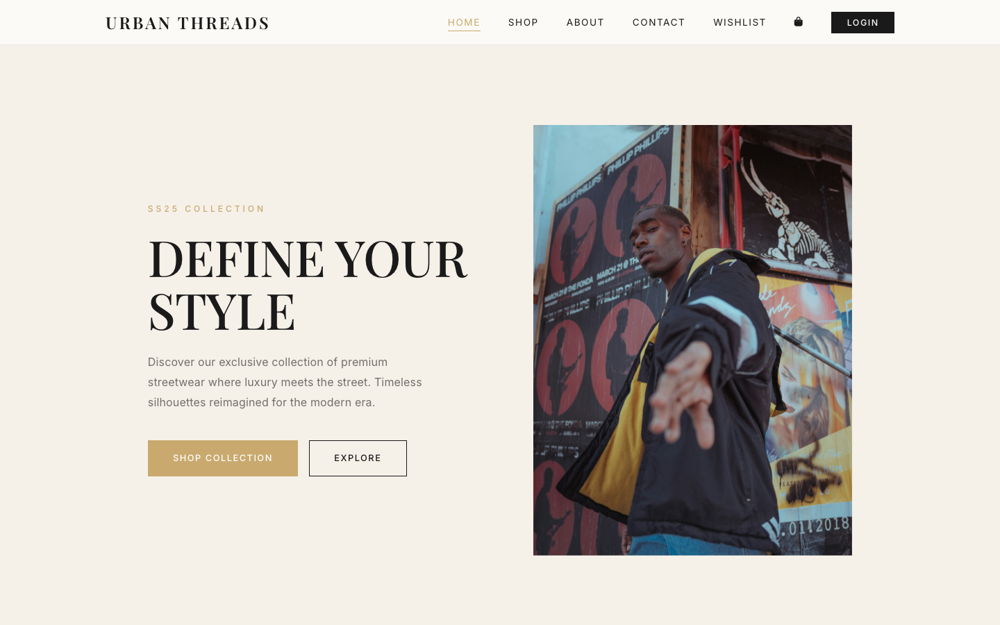
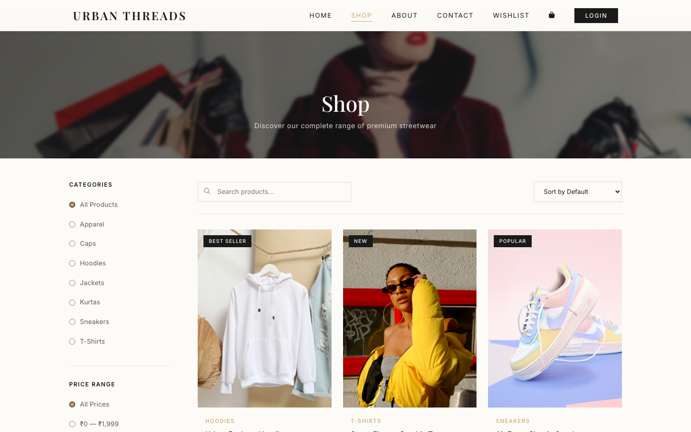
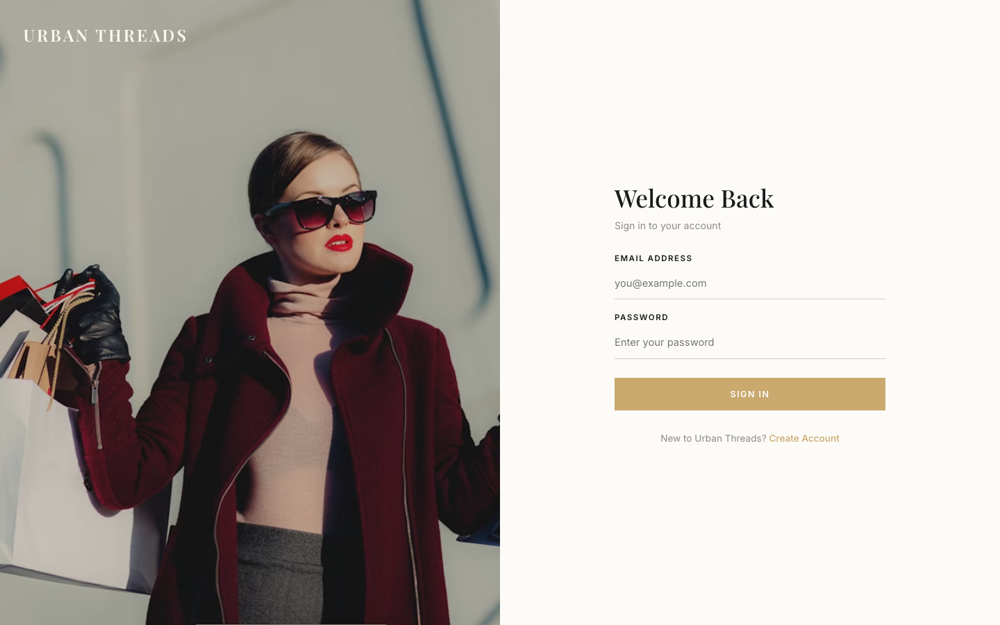
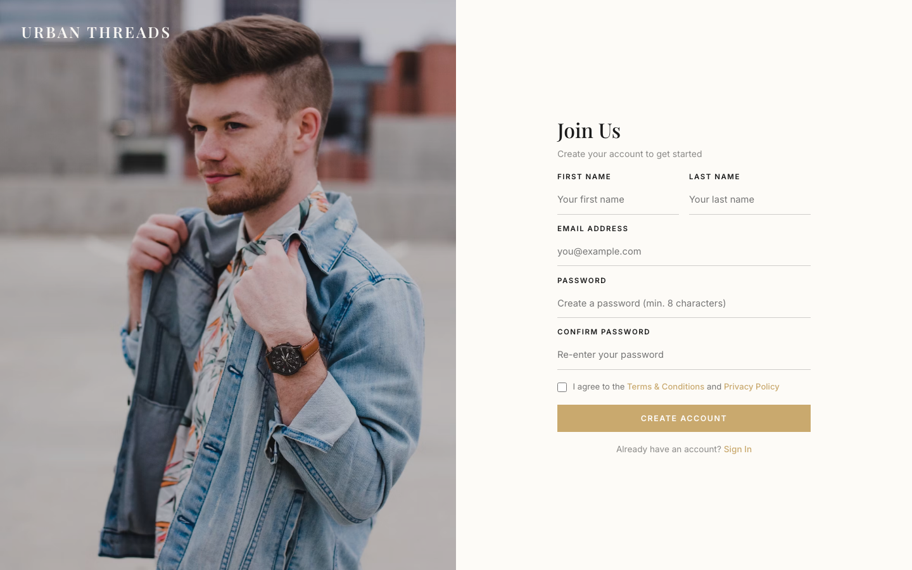
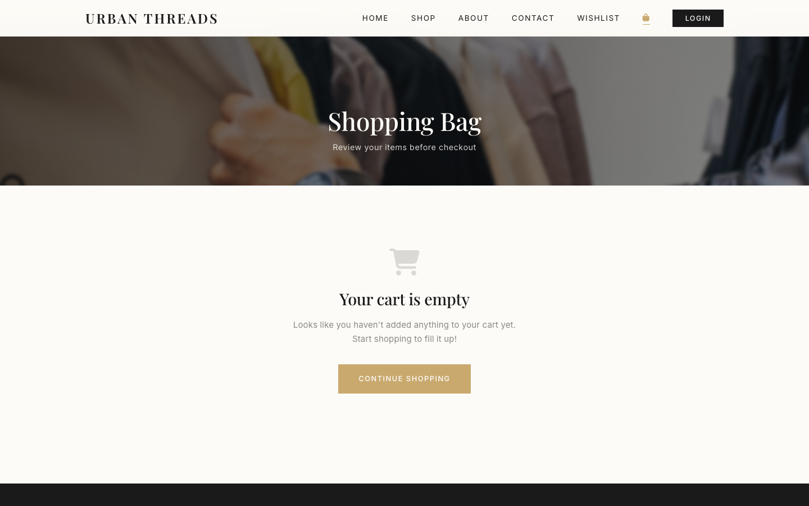
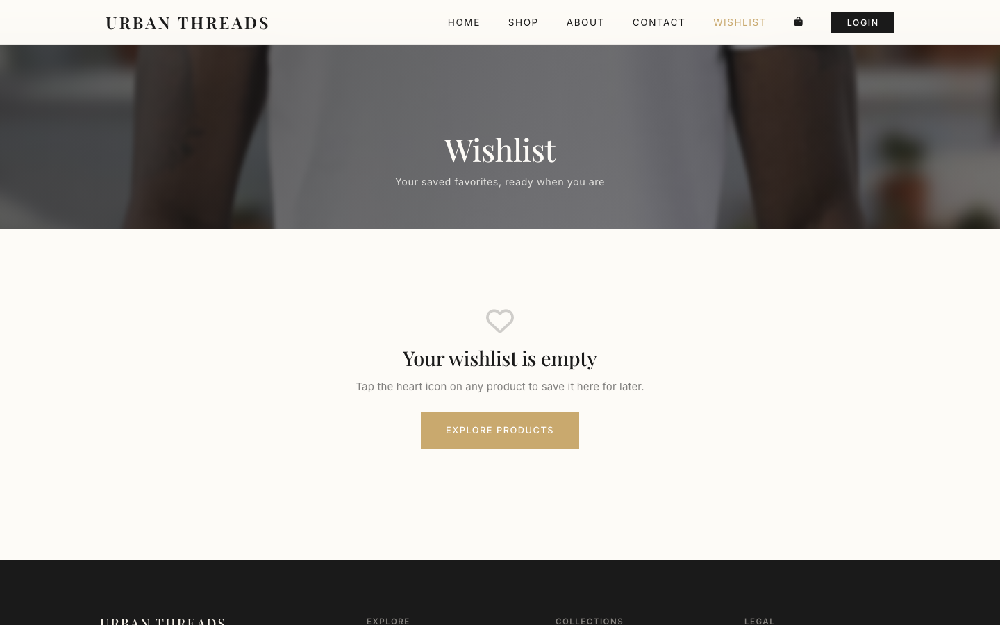
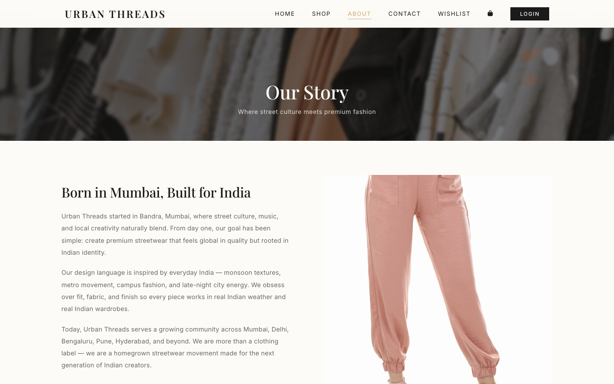
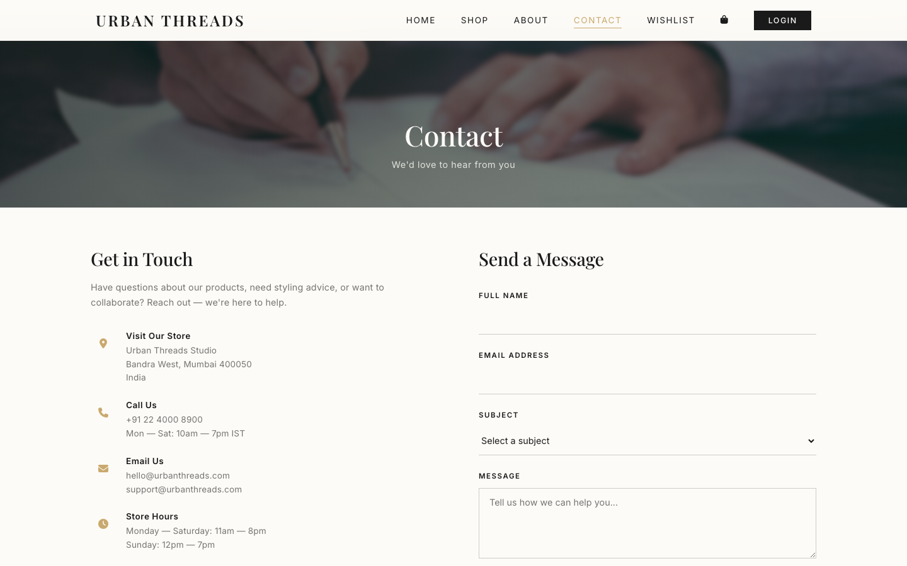
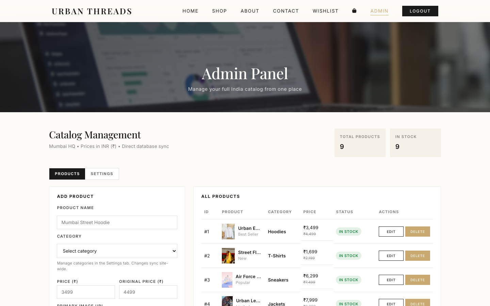
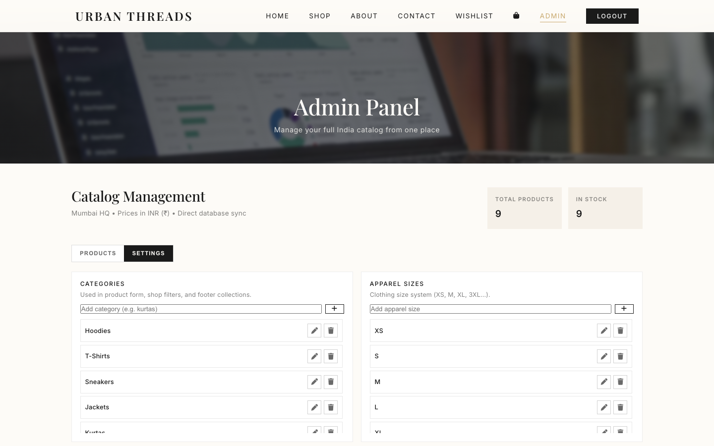

Chapter 10
Output Screens
This chapter presents the actual output screens of the Urban Threads application. All screenshots are taken from the live deployed website at https://urban-threads-theta.vercel.app.
10.1 Homepage
The homepage features a hero section with a full-width banner, brand tagline, and call-to-action buttons. Below the hero, featured products are displayed in a responsive grid layout with hover animations and gold accent styling.

Fig. 10.1: Homepage — Hero Section and Featured Products
10.2 Shop / Product Catalog Page
The Shop page displays the complete product catalog with category filter buttons (All, Hoodies, Sneakers, T-Shirts, Jackets, Accessories). Products are shown in a responsive grid with image, name, price, and "Add to Cart" button.

Fig. 10.2: Shop / Product Catalog Page with Category Filters
10.3 User Login Page
The Login page provides a clean and secure interface for user authentication. It includes email and password fields with client-side validation, a gold accent login button, and a link to the registration page for new users.

Fig. 10.3: User Login Page
10.4 User Registration Page
The Registration page allows new users to create accounts with name, email, and password fields. It performs real-time validation for password matching and minimum length requirements.

Fig. 10.4: User Registration (Signup) Page
10.5 Shopping Cart Page
The Cart page displays items with product image, name, size, quantity selector, unit price, and subtotal. The cart summary shows the total amount and a "Proceed to Checkout" button.

Fig. 10.5: Shopping Cart Page with Cart Summary
10.6 Wishlist Page
The Wishlist page shows saved products with options to move items to cart or remove them. The wishlist is persistent across sessions for logged-in users.

Fig. 10.6: Wishlist Page
10.7 About Us Page
The About Us page presents the brand story, mission statement, and team information with an engaging visual layout using the dark premium theme.

Fig. 10.7: About Us Page
10.8 Contact Us Page
The Contact Us page provides a form with fields for name, email, subject, and message. It also displays the store's contact information and location details.

Fig. 10.8: Contact Us Page with Contact Form
10.9 Admin Login Page
The Admin Login page provides a separate authentication interface for the store administrator. Admin credentials are configured via environment variables for security.

Fig. 10.9: Admin Login Page
10.10 Admin Dashboard — Product Management
The Admin Dashboard provides a comprehensive interface for managing the store. The left panel contains the "Add Product" form with fields for product name, category selection, price, original price, primary image URL, additional image URLs, video URLs, description, available sizes (apparel and footwear), colors, rating, and stock status. The right panel shows "All Products" in a table format with columns for ID, Product Name, Category, Price, Status, and Actions (Edit/Delete). The top section displays statistics cards showing Total Products and In Stock counts.

Fig. 10.10: Admin Dashboard — Product Management Panel
The admin panel also includes a Settings tab for managing categories, apparel sizes, footwear sizes, and colors. These settings are used across the site — in the shop page category filters, in the product form dropdowns, and in the footer collection links.

Fig. 10.11: Admin Panel — Settings Tab (Categories, Sizes, Colors Management)